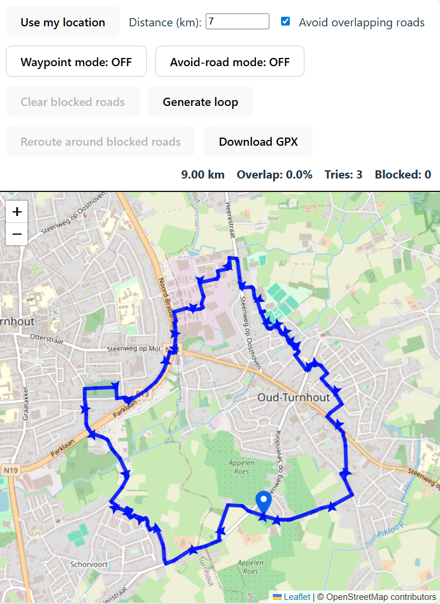
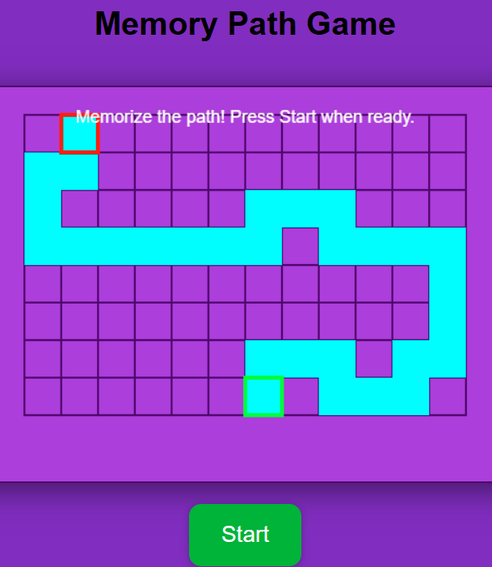
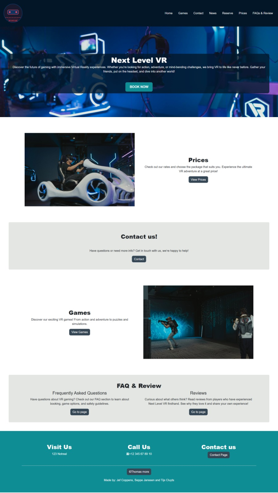
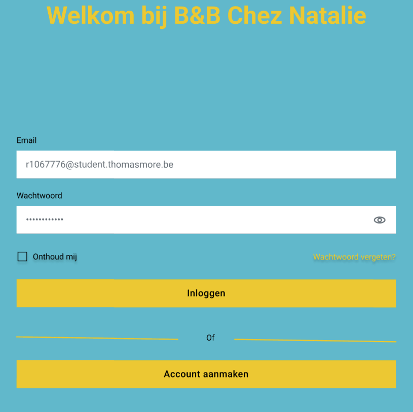

Mijn projecten
Een overzicht van wat ik gebouwd heb — van schoolprojecten tot eigen initiatieven. Gesorteerd van meest naar minst indrukwekkend.
Looproute Generator
Een webapplicatie die automatisch looproutes genereert op basis van een startpunt en gewenste afstand. Via een externe kaart-API wordt een realistische route berekend en visueel weergegeven op een interactieve kaart. Het idee ontstond vanuit mijn eigen gewoonte om te lopen met de hond — ik wou een tool die écht bruikbaar is in het dagelijks leven.

Memory Path Game
Een browsergebaseerde memory game waarbij een AI een willekeurig pad genereert over een raster. De speler moet het pad onthouden en exact nabootsen om naar de overkant te geraken. Het spel wordt progressief moeilijker naarmate je verder komt. Het project combineerde mijn liefde voor puzzelgames met mijn interesse in hoe spelmechanics technisch werken.

Arcade Full Stack Website
In het eerste jaar bouwde ik samen met mijn groep een volledige full stack website voor een fictief arcadebedrijf. Als groepsleider coördineerde ik de taakverdeling, bewaaakte ik de planning en zorgde ik ervoor dat front- en backend goed op elkaar aansloten. Het was mijn eerste echte ervaring met end-to-end webontwikkeling én met leidinggeven in een technisch project.

Sudoku Solver
Een applicatie die automatisch sudoku's oplost via een backtracking-algoritme. De gebruiker kan een onvolledige sudoku invoeren en het programma vult de ontbrekende cijfers aan. Dit project bouwde ik vooral om logische algoritmen beter te begrijpen — en omdat ik van puzzels hou.
Webapp Design voor Klant — Figma
In het kader van SKIL2 kregen we de opdracht om voor een echte klant een webapplicatie te ontwerpen. Via Figma maakten we een volledig interactief prototype dat toont hoe de uiteindelijke website eruit zou zien. We vertrokken van de noden van de klant, werkte iteratief en presenteerden het eindresultaat professioneel. Het leerde me hoe je van een vaag idee naar een concreet, visueel product gaat.
